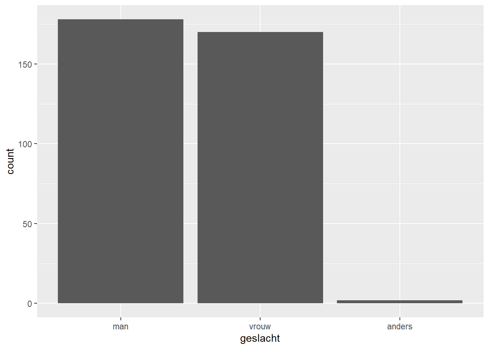
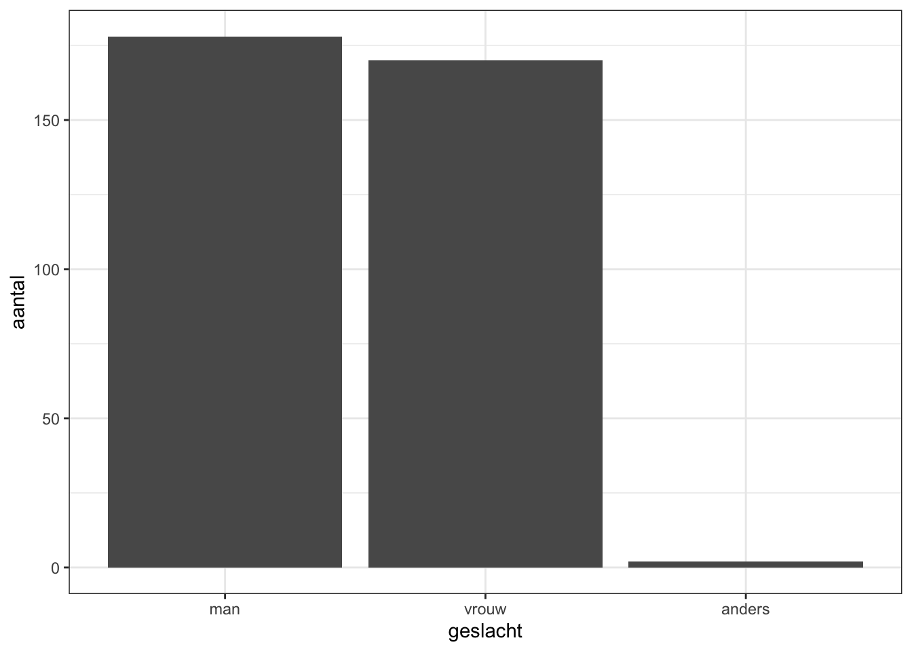
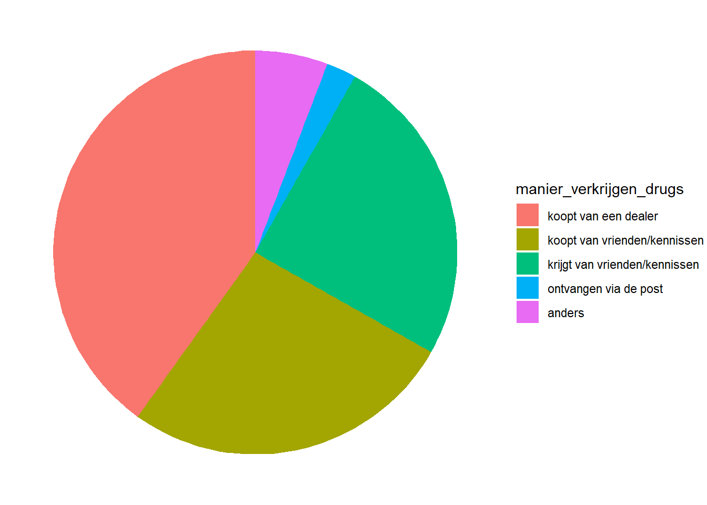
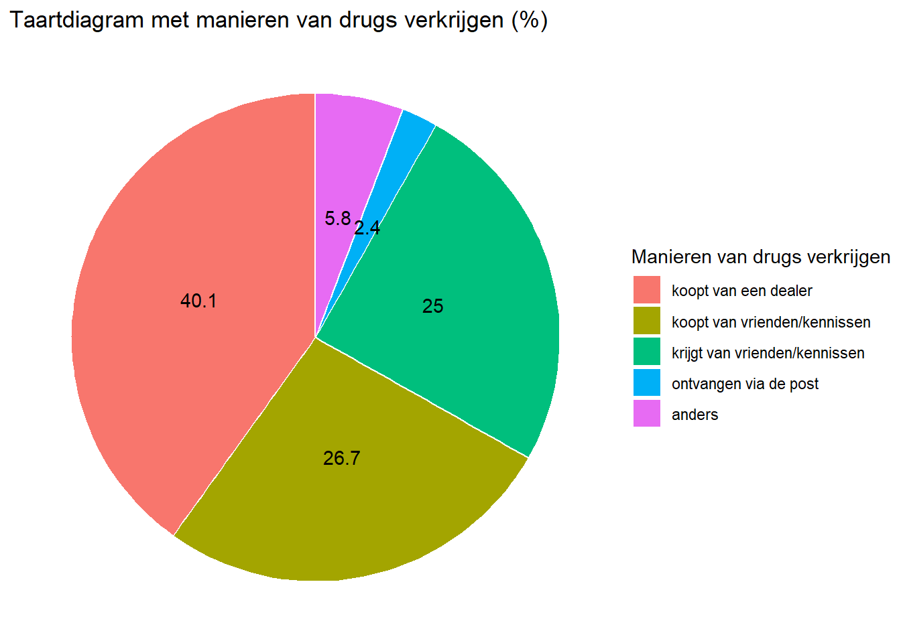
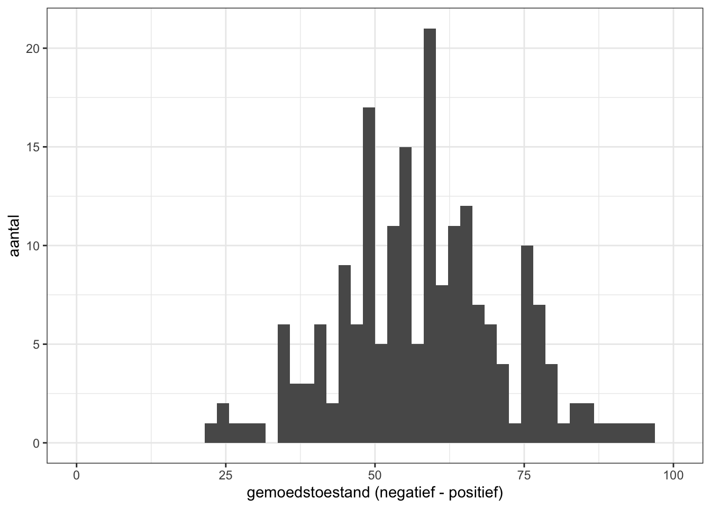

Op de vorige pagina heb je gezien wat een dataset is, en dat deze bestaat uit observaties (de rijen) en variabelen (de kolommen). In de basis zijn er vier manieren met variabelen eigenschappen meetbaar te maken (ook wel: operationaliseren). We noemen deze manieren meetniveaus. Niet ieder meetniveau geeft even veel informatie. Als we informatie willen over de leeftijden van onze respondenten, kunnen we dit op verschillende manieren uitvragen. We kunnen direct vragen naar hun leeftijd, maar we kunnen ze ook indelen in leeftijdscategorieen (bijv.: jonger dan 18 en 18 jaar en ouder). We bespreken hier de vier meetniveaus en daarbij gaan we meteen in op hoe we de informatie die de variabelen verschaffen het beste visueel kunnen presenteren.
Doorgaans maken we onderscheid tussen kwalitatieve en kwantitatieve variabelen.
4.1 Kwalitatieve variabelen
Kwalitatieve variabelen bestaan uit categorieën die een kwalitatieve eigenschap van een observatie beschrijven. Deze eigenschappen zijn niet direct in cijfers uit te drukken, zoals bij kwantitatieve variabelen. Een belangrijk aspect is dat de categorieën discreet zijn: ze moeten elkaar uitsluiten.
4.1.1 Staafdiagram
Laten we naar een voorbeeld kijken: geslacht. Stel dat we willen weten hoeveel mannen, vrouwen of anders-identificerenden er in de dataset zitten. Daarvoor kunnen we staafdiagram maken.
# laden packageslibrary(readr)library(ggplot2)library(tidyverse)# laden van de datadata <-read_rds("data/middelengebruik_uitgaanders.rds")# staafdiagram makenggplot(data, aes(x = geslacht)) +# data en variabele selecterengeom_bar() # staafdiagram

De staafdiagram geeft een visuele presentatie van het aantal mannen, vrouwen en anders-identificerenden in de dataset. Het mooie aan R is dat we de figuur visueel nog wat aantrekkelijker kunnen maken. Hiermee ga je meer oefenen tijdens de cursus.
# staafdiagram met betere visualisatieggplot(data, aes(x = geslacht)) +geom_bar() +theme_bw() +# witte achtergrondylab("aantal") # label voor y-as

De figuur heeft nu een witte achtergrond en de y-as heeft een Nederlandstalig label.
4.1.2 Simpele tabel
Als je wilt weten hoeveel respondenten er precies in elke categorie zitten, kun je ook een simpele tabel maken.
# tabel van geslachttable(data$geslacht)
man vrouw anders
178 170 2
De dataset bevat in totaal dus xxx mannen, xxx vrouwen en xxx in de categorie “anders”.
4.1.3 Nominale variabele
Geslacht is een voorbeeld van een nominale variabele. Dit is een kwalitatieve variabele waarin geen rangorde bestaat tussen de categorieën. De variabele bestaat uit kwalitatieve eigenschappen die van elkaar verschillen, maar je kunt niet zeggen dat de ene categorie intrinsiek ‘hoger’ of ‘lager’ is dan de ander.
4.1.4 Taartdiagram
Een andere manier om een nominale variabele te presenteren, is via een taartdiagram. Een taartdiagram kan snel een overzicht geven van de verhouding tussen categorieën binnen een bepaalde variabele. Doorgaans werkt een taartdiagram het beste als er een beperkt aantal categorieën zijn.
Hieronder staat een voorbeeld van taartdiagram van de variabele manier_verkrijgen_drugs. Dit gaat over de wijze waarop uitgaande jongeren meestal aan hun drugs komen.
# samenvatten van de relevante datadrugs_verkrijgen <- data |>filter(!is.na(manier_verkrijgen_drugs)) |># missende waarden verwijderengroup_by(manier_verkrijgen_drugs) |># groeperen op variabelesummarise(n =n()) |># aantal respondenten per categorie berekenenmutate(perc =round(n/sum(n) *100, 1)) # percentages berekenen en afronden op 1 decimaal# taartdiagram van hoe drugs worden verkregenggplot(drugs_verkrijgen, aes(x="", y = perc, fill = manier_verkrijgen_drugs)) +# percentages (y) en categorieen (fill) selecterengeom_bar(stat ="identity", width =1) +coord_polar("y", start =0) +# optie voor taartdiagram theme_void() # achtergrond weghalen

De taartdiagram weergeeft het aandeel per categorie van hoe jongeren doorgaans aan hun drugs komen. We kunnen de presentatie van taartdiagram echter nog verbeteren.
# taartdiagram van hoe drugs worden verkregenggplot(drugs_verkrijgen, aes(x="", y = perc, fill = manier_verkrijgen_drugs)) +geom_bar(stat ="identity", width =1, colour ="white") +# witte randen toevoegencoord_polar("y", start =0) +theme_void() +geom_text(aes(label = perc), position =position_stack(vjust =0.5)) +# percentages als labels toevoegen labs(fill ="Manieren van drugs verkrijgen") +# titel voor legendaggtitle("Taartdiagram met manieren van drugs verkrijgen (%)") # titel voor figuur

We hebben nu een duidelijk inzicht in hoe jongeren die drugs gebruiken hier aan komen. Zo zien we bijvoorbeeld dat ongeveer xx procent dit via een dealer koopt, en ongeveer een kwart het koopt via vrienden/kennissen en een kwart het van deze krijgt.
Dit toont meteen een relevante bevinding uit de literatuur over drugsgebruik onder jongeren, namelijk dat de helft van de jongeren hun drugs verkrijgen via “sorting” (zie Parker et al., 2002). Dat wil zeggen, dat een bekende uit een vrienden- of kennissenkring iemand van drugs voorziet eerder dan een dealer.
4.1.5 Ordinale variabele
Een kwalitatieve variabele waarbij er wel een bepaalde rangorde (hiërarchie) tussen de categorieën is, noemen we een ordinale variabele.
Laten we weer naar een voorbeeld kijken. In de enquete is gevraagd hoe jongeren hun eigen gezondheid over het algemeen beoordelen. Voor een ordinale variabele maken we in principe altijd een staafdiagram.
De staafdiagram toont dat het grootste deel hun gezondheid als “goed” beoordeelt. Een relatief klein deel van de jongeren beoordeelt hun gezondheid als “matig” of zelfs “slecht”.
Dit voorbeeld illustreert een relevant kenmerk van ordinale variabelen: er is een bepaalde rangorde tussen de categorieen, maar de afstand ertussen is niet per se gelijk. Zo is de stap van “matig” naar “goed” bijvoorbeeld kwalitatief anders dan de stap van “zeer goed” naar “uitstekend”. Hierin verschilt een ordinale variabele van een kwantitatieve variabele, bij de laatste is de afstand tussen waarden (1-2-3 etc.) in principe altijd gelijk.
4.2 Kwantitatieve variabelen
Kwantitatieve variabelen zijn numeriek en bestaan dus uit cijfers. De afstand tussen waarden is altijd gelijk en er zit een rangorde in. Bijvoorbeeld bij een rapportcijfer van 1 t/m 10 is de afstand tussen 2 en 3 hetzelfde als de afstand tussen 7 en 8. Kwantitatieve variabelen worden soms ook wel lineaire of continue variabelen genoemd.
4.2.1 Interval en ratio variabelen
Er zijn twee types kwantitatieve variabelen: interval en ratio. Het verschil tussen deze twee types is dat een interval variabele geen absoluut nulpunt kent en een ratio variabele wel.
Leeftijd is bijvoorbeeld een ratio variabele, je kunt namelijk niet jonger dan 0 jaar zijn. Geboortejaar, aan de andere kant, is weer een interval variabele. De christelijke jaartelling begint bij het jaar 0, maar dat is eigenlijk arbitrair omdat de jaren daarvoor ook geteld worden. Het specifieke karakter van de variabele bepaalt dus het meetniveau.
Voor een lineaire variabele met relatief weinig unieke waarden gebruiken we meestal een staafdiagram. Zie hieronder een voorbeeld van de variabele leeftijd.
De staafdiagram toont dat relatief veel respondenten tussen 21 en 24 jaar zijn, een leeftijd waarop jongeren veel uitgaan.
4.2.2 Histogram
Voor een lineaire variabele met juist relatief veel unieke waarden gebruiken we meestal een histogram. Bij een een histogram worden bepaalde waardes gegroepeerd tot één staaf, waardoor de presentatie overzichtelijk blijft. Dit is hieronder weergeven voor de variabele gemoed_dinsdag_na_xtc. Dit is een score tussen de 0 en 100 die respondenten hebben gegeven hoe zich voelen op de dinsdag na xtc-gebruik in het weekend, waarbij 0 voor negatief staat en 100 voor positief.
# histogram van gemoedstoestand op dinsdag na XTC gebruikggplot(data, aes(x = gemoed_dinsdag_na_xtc)) +geom_histogram(bins =50) +theme_bw() +ylab("aantal") +xlab ("gemoedstoestand (negatief - positief)") +xlim(0, 100)

4.3 Samenvatting
Het meetniveau gaat over het type variabele en wat voor soort informatie deze bevat. Zoals we later zullen zien, is dit belangrijk om te weten wat voor soort statistische toets we kunnen uitvoeren. We onderscheiden de volgende meetniveaus (tussenhaakjes staat welke figuur we meestal gebruiken):